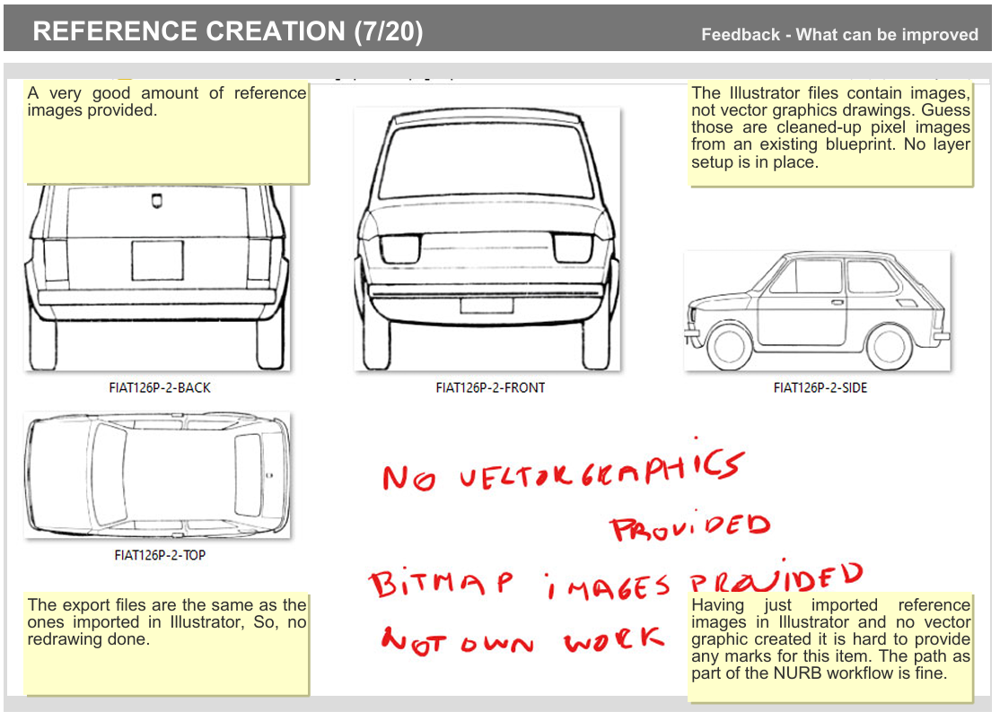
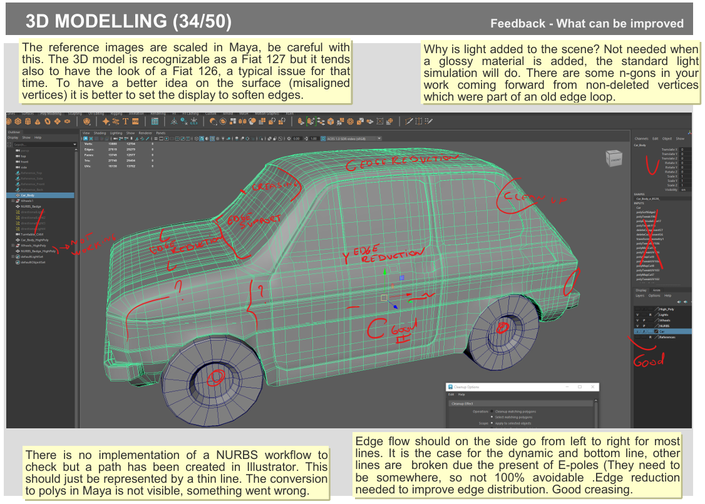
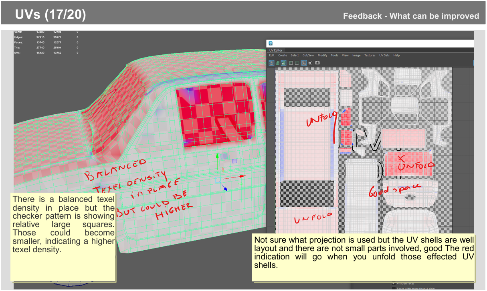
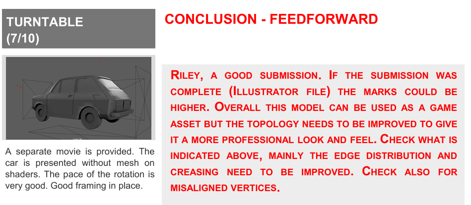

GAME MODELLING FUNDAMENTALS (GMF) ASSIGNMENT 2
The following steps should be part of the creation process:
- Do visual research into the topic to get acquainted with the basic shapes of the model (collecting images covering overviews and details of the subject, blueprints).
- Create your own reference images for use in the 3D modelling software.
- Create a 3D model according to the self-created references and with support of the collected footage material.
This assignment is worth 70% of your overall unit grade.
Detailed Brief
The following steps should be part of the creation process:
- Do visual research into the topic to get acquainted with the basic shapes of the model (collecting images covering overviews and details of the subject, blueprints).
- Create your own reference images for use in the 3D modelling software.
- Create a 3D model according to the self-created references and with support of the collected footage material.
This assignment is worth 70% of your overall unit grade.
- Reference images.
- Self-created vector graphic references using Adobe Illustrator.
- PNG exports for the self-created vector graphics to use as reference inside the 3D modelling software.
- A 3D model based on self-created vector graphic references.
- The 3D model must be created using edge modelling techniques.
- The 3D model must subdivide correctly.
- A NURBS workflow (from path creation to mesh conversion) presented for at least one element of the car model. Keep paths and surfaces in the Outliner present!
- Deliver one Maya scene containing the car model.
- UVs in place for all parts of the 3D model.
- The software used must be Maya 2024.
- Turntable presentation in Maya with wireframe visible on shaded.
- A maximum of 15,000 polys.
On this assignment I received a mark of 65/100, which I am pleased with, as it was my first time creating a complex 3D model. If I were to redo this assignment, I would try to focus more on the edge distribution and reference images - as this is where I lost most of my marks.
Feedback Images:



